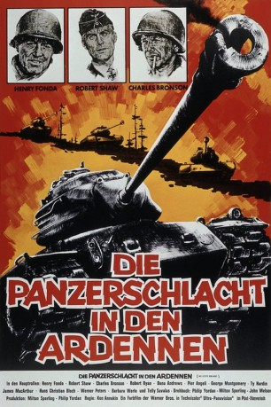

#11487 Die Letzte Schlacht
Alternativ: Battle of the Bulge (Englischer Titel) Die Panzerschlacht in den Ardennen
 
 IMDB-Wertung: 6.8 / 10
IMDB-Wertung: 6.8 / 10  Tomatometer: 57
Tomatometer: 57  Metascore: 0
Metascore: 0 
Winter 1944. Der Krieg steht vor seinem Ende, und die amerikanischen Soldaten hoffen, an Weihnachten wieder zu Hause zu sein. Doch der Schein trügt, denn Deutschland hat sich noch nicht geschlagen gegeben und bereitet in den Ardennen eine letzte große Offensive mit starken Panzer- und Infanterieverbänden vor. Den Deutschen gelingt der Durchbruch. Die Amerikaner befinden sich auf dem Rückzug und können die Verteidigung einiger kleineren Städte und Ortschaften nur mit Mühe organisieren. Das führt zur erfolgreichen Überquerung einer intakten Brücke, die vorher von deutschen Fallschirmjägern (in GI-Uniformen) gesichert wurde. Doch schon bald gibt es Probleme mit der Treibstoffversorgung. Man ist darauf angewiesen, feindliche Reserven zu erbeuten. Der Vorstoß kommt nach und nach zum Erlahmen. Da fasst Oberst Hessler die Entscheidung, mit einigen wenigen Panzern das feindliche Treibstofflager zu erobern und somit den Angriff weiter voranzutreiben.
Jahr: 1965
Dauer: 155 Minuten
FSK: 12
Land: USA Studio: Warner Bros.Tonspuren: DD5.1 - ,
Untertitel:
Auflösung: 1080p (1920x696) Größe: 5611 MB
Genre: Drama, Krieg, Geschichte
Regisseur: Ken Annakin
Drehbuch: Philip Yordan, Milton Sperling, John Melson
Soundtrack: Benjamin Frankel
Darsteller:
 Henry Fonda als Lt. Col. Dan Kiley
Henry Fonda als Lt. Col. Dan Kiley Robert Shaw als Col. Hessler
Robert Shaw als Col. Hessler Robert Ryan als Gen. Grey
Robert Ryan als Gen. Grey Dana Andrews als Col. Pritchard
Dana Andrews als Col. Pritchard- George Montgomery als Sgt. Duquesne
- Pier Angeli als Louise
- Barbara Werle als Elena
 Charles Bronson als Wolenski
Charles Bronson als Wolenski- Hans Christian Blech als Conrad
 Werner Peters als Gen. Kohler
Werner Peters als Gen. Kohler- James MacArthur als Lt. Weaver
 Karl-Otto Alberty als Von Diepel
Karl-Otto Alberty als Von Diepel Telly Savalas als Sgt. Guffy
Telly Savalas als Sgt. Guffy- Steve Rowland als Eddy
- Robert Woods als Joe - Kiley's Pilot
 Donald Pickering als
Donald Pickering als - Robert Royal als
- William Conrad als Narrator (uncredited)
- Charles Stalmaker als Maj. Burke
- David Thomson als
- Sebastian Cavalieri als
- Raoul Perez als
- Jack Gaskins als
- Janet Brandt als Mother Superior
- Max Slaten als
- Carl Rapp als American MP Lieutenant
- Axel Anderson als
- Bud Strait als
- Ben Tatar als
- Peter Herendeen als
- Richard Ziedman als
- Paul Eslheman als
- John Schereschewsky als
- Victor Brandt als
- Richard Baxter als
- William Boone als
- John Clark als
- Ward Maule als
- Paul Polansky als
- Freddie Toehl als
- Leland Wyler als
- Quinn Donoghue als Nun #2
- John Friess als
- Reginald Gillam als
- Peter Grzcegorczyk als
- Richard Laver als
- Harry Van Der Linden als
- Derek Robertson als
- Martin Rolin als
- Russ Stoddard als
Datei: X:\1965\Letzte Schlacht, Die (1965, FSK12, 1920x696).mkv seit 16.07.2019
Festplatte: Gemischt-01+Anime
 Es gibt insgesamt 25 Filme in der Gruppe '1965'
Es gibt insgesamt 25 Filme in der Gruppe '1965'